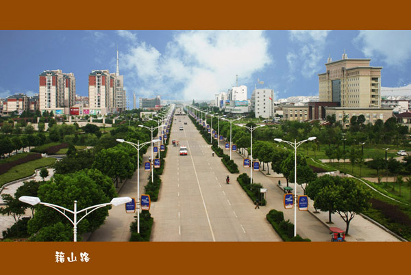

籍山路

南陵夜景

南陵生态优美，物产丰富。是国家级生态示范区、全国农业旅游示范点。拥有丫山花海石林和大浦乡村世界两个国家4A级景区以及乌霞寺风景区、奎潭湖风景区、小格里森林公园等一批自然景点。南陵素有“芜湖米市，南陵粮仓”的美称，盛产优质大米、木材、丹皮、蘑菇、莲藕等，“凤丹”、“南陵大米”、“弋江籽”紫云英是国家地理标志保护产品，拥有奔牛、鲁班、古麒、弋江籽四个中国驰名商标。目前已进入详查阶段的姚家岭铜锌金多金属矿，锌、金储量达到国家大型矿床标准，潜在经济价值超过600亿元。储量达6688万吨的钾长石矿，综合利用潜在经济价值约1300亿元。